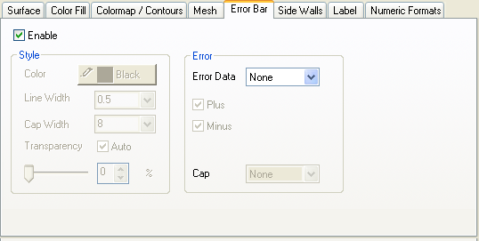
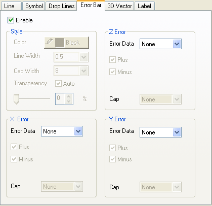

Die Registerkarte 3D-Fehlerbalken auf Datensatzebene des Dialogfelds Details Zeichnung enthält Bedienelemente für Stil, Richtung und Transparenz der 3D-Fehlerbalken. Bitte beachten Sie, dass die 3D-Fehlerbalken nur mit 3D-Punkt- und 3D-Oberflächendiagrammen erstellt werden können.
|  |  |
Inhalt |
Legt fest, ob 3D-Fehlerbalken aktiviert sind.
| Farbe |
Wählen Sie die gewünschte Fehlerbalkenfarbe in der Liste aus. Wählen Sie Automatisch, um sicher zu stellen, dass die Fehlerbalkenfarbe der zugehörigen Symbolfarbe in einem Diagramm mit Symbolen oder der zugehörigen Linienfarbe, falls keine Symbole vorhanden sind, entspricht. |
|---|---|
| Linienbreite |
Geben Sie die Linienbreite des Fehlerbalkens ein. |
| Breite des Linienendes | Geben Sie die Breite des Linienendes des Fehlerbalkens ein. |
Diese Option steuert, wie durchsichtig die Fehlerbalken sind. Bewegen Sie den Schieber oder geben Sie eine gewünschte ganze Zahl von 0 bis 100 in das Kombinationsfeld ein. Beachten Sie, dass das Symbol bei 0 gar nicht und bei 100 vollkommen transparent ist.
| Fehlerdaten |
Legt die verwendeten Daten zum Zeichnen der Fehlerbalken fest. |
|---|---|
| Plus |
Aktivieren Sie dieses Kontrollkästchen, um Fehlerbalken über der Zeichnung zu zeigen. |
| Minus |
Aktivieren Sie dieses Kontrollkästchen, um Fehlerbalken unter der Zeichnung zu zeigen. |
| Linienende | Legen Sie fest, welche Linien als Linienende des Fehlerbalkens verwendet werden. Es können zum Beispuel die XY-Linien als Ende für den Z-Fehler gezeigt werden. |